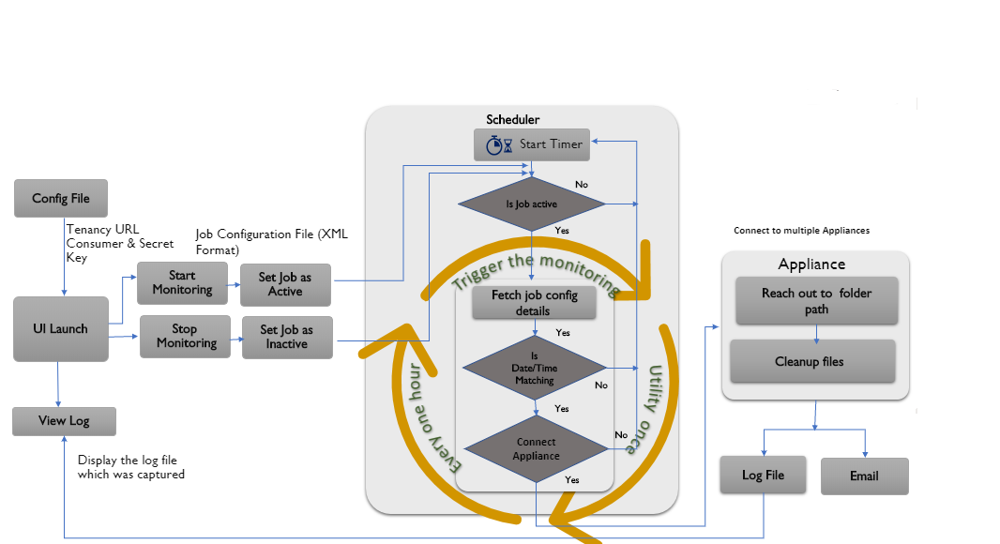

Launch
Saves productive time of Developers and Tester
Simple to use

Winscp - It is not the continuous job process
Filezilla - Manually need to delete the files
Before the demo, we have to accumulate at least 10 days of jobs
JDk need to installed
Windows Task sheduler need to set with highest privilages
Xammp Need to be installed.
Oauth.dll need to be dropped in "C:\xampp\php\ext" with same version of xammp.
If the task scheduler is stopped you need to restart the whole utility.
Smartcomm Appliance need to be in running state and connected to our tenancy.
Task scheduler time should not be set in seconds.
SmartCOMM Appliance Disk clean-up utility

Any parallel product/ utility provided by product vendors/ any other third party ?:
- We will walk the audience through the front end to explain how to configure the utility
- For demo purpose we will configure our na4 tenancy (can be accessed from any network) set with 8 days age policy (i.e. it will delete 9th and 10th day job data)
- We will change the age policy to 4 days and start the job to show that the utility can be reconfigured
- We can walk the audience through the program code if there is an interest so that they get a high-level understanding.